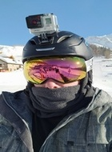

A picture of Steven Duckett in his Snowboarding Attire
Category
Fact
Age
25 years old
Favourite Food
Either Lasagna, Pizza or Steak
Favourite Resort
Sauze D'Oulx
Tricks of the trade
So, you've been snowboaring for a while now and have mastered the basics. You might even have experimented with the first
challenge of freestyle which is riding switch. Or maybe you're just getting a little bored of just getting down the run and you want to add some more flair? Well you're in the right place so buckle up, sit tight
and read on to get started with snowboard freestyle.
Freestyle tricks can be split into two categories, Flatland or Park. Flatland are tricks are exactly what they say on the tin, they are tricks that are performed on flat land (The ski slope).
Park tricks are one that are performed in a freestyle park and can involve jumping off of various different ramps or grinding different rails. Of the tricks I have xplained below, some are Flatland and
are Park; some can even be both!
In snowboarding, your stance is how you stand on/ride your snowboard and there are two possibilities. You either ride Regular or Goofy:
Regular
Regular is where you ride with your left foot forward
Goofy
Goofy is where you ride with your left foot forward
If you're unsure of how to find your preferred stance just follow this process:
Imagine you're about to kick a football, your forward foot in snowboarding will be the foot that you "plant" next to the ball when you go to kick it. For
example, I am right footed so in order for me to kick a football I would "plant" my left foot to support my body. Therefore, on a snowboard your "planted" foot is in front
(which, for me, is my left foot) so I ride regular.
Finally, if you want to ride switch then you simply ride your snowboard in the opposite stance. So as my normal riding stance is Regular, I would ride in Goofy. Fair warning though, until
you are well praticed, you will need to relearn all the basics of turning etc. all over again!. So go and find yourself a wide blue run and get practicing before coming back here and moving on!
A manual for a Manual
The manual may be a basic starter trick, but it's the first step in many other tricks so it's important you get comfortable with it. You also look pretty sweet when you pass someone on the slope
whilst balancing on the nose of your board. There are two types, the Manual and the Nose Manual and both have switch variants
Manual
Balance your weight over the center of your snowboard and make sure you don't lean forward or backward as you'll fall over
Bend your knees and shift your weight towards your back foot until your upper body is over the top of your back binding
Whilst leaning your weight over your back binding, simultaneously lift your front foot upwards. You should feel the nose of your snowboard lift and you'll now be balancing on just the tail
Nose Manual
Balance your weight over the center of your snowboard and make sure you don't lean forward or backward as you'll fall over
Bend your knees and shift your weight towards your front foot until your upper body is over the top of your front binding
Whilst leaning your weight over your front binding, simultaneously lift your back foot upwards. You should feel the tail of your snowboard lift and you'll now be balancing on just the nose
Get buttery with it
Buttering is the process of switching stances using a manual or nose manual. It looks super cool and when you combine it with other tricks flatland tricks such as 180s you can get a good flow going.
Also, step 1 of Buttering is to be able Manual & Nose Manual so if you can't, look above, read my steps and practice!
Butter
Balance your weight over the center of your snowboard and make sure you don't lean forward or backward as you'll fall over
Twist your torso and arms to the opposite direction in which your want to turn. So if you want to Butter right, twist left and vice versa
Bend your knees and shift your weight towards your back foot until your upper body is over the top of your back binding
Whilst leaning your weight over your back binding, simultaneously lift your front foot upwards. You should feel the nose of your snowboard lift and you'll now be balancing on just the tail
Now, twist back in the opposite direction to step two and if you keep your balance you should feel snowboard turning around on just the tail
Nose Butter
Balance your weight over the center of your snowboard and make sure you don't lean forward or backward as you'll fall over
Twist your torso and arms to the opposite direction in which your want to turn. So if you want to Butter right, twist left and vice versa
Bend your knees and shift your weight towards your front foot until your upper body is over the top of your front binding
Whilst leaning your weight over your front binding, simultaneously lift your back foot upwards. You should feel the tail of your snowboard lift and you'll now be balancing on just the nose
Now, twist back in the opposite direction to step two and if you keep your balance you should feel snowboard turning around on just the nose
Getting some air
By now I'm expecting that you've got the hand of things and have been Manualling and Buttering to your hearts content! But "Steve!", I hear you shouting, how do I get some air like
all those people in the YouTube video's I've seen?
Ask and you shall receive! The most basic way to get some air is to learn how to Ollie & Nollie. These two tricks are viewed by many as the cornerstone and will
make you able to jump on and off of rails, cliffs, boxes, kickers and many more objects. Read on to learn how:
Ollie
Balance your weight over the center of your snowboard and make sure you don't lean forward or backward as you'll fall over
Bend your knees and shift your weight towards your back foot until your upper body is over the top of your back binding
Whilst leaning your weight over your back binding, simultaneously lift your front foot upwards. You should feel the nose of your snowboard lift and you'll now be balancing on just the tail
Now, push down with your back foot and jump up as high as you can. When done correctly both you and your snowboard shop hop a small distance in the air
Once in the air, you'll need to learn your body towards your front foot and back over the center as this will start the process of levelling your snowboard. You will also simultaneously need to
pull your back foot upwards until you're in a crouched position in mid air
Gravity will do it's thing and pull you back down to the snow, now the final step is is land with soft knees in order to keep your balance and lessen the impact
Nollie
Balance your weight over the center of your snowboard and make sure you don't lean forward or backward as you'll fall over
Bend your knees and shift your weight towards your front foot until your upper body is over the top of your front binding
Whilst leaning your weight over your front binding, simultaneously lift your back foot upwards. You should feel the tail of your snowboard lift and you'll now be balancing on just the nose
Now, push down with your front foot and jump up as high as you can. When done correctly both you and your snowboard shop hop a small distance in the air
Once in the air, you'll need to learn your body towards your back foot and back over the center as this will start the process of levelling your snowboard. You will also simultaneously need to
pull your front foot upwards until you're in a crouched position in mid air
Gravity will do it's thing and pull you back down to the snow, now the final step is is land with soft knees in order to keep your balance and lessen the impact
Give it a twist
The final trick I have to teach you is the 180. The 180 is where you jump in the air whilst turning 180 degrees either frontside or backside.
Frontside the front of your body turns to face the direction you're travelling, Backside means the the back of your body turns to face the direction you're travelling.
So if you ride with a Regular stance you jump and spin left to do a Frontside 180 and you would jump and spin to the right to do a Backside 180. If you ride with a regular stance, you
would do the opposite. Also, 180's are much easier if you use what is known as a Two Feet jump instead of an Ollie. Let's break it down:
The 180
Note that the following steps are generic because the method is the same, but the actual type of 180 performed will depend on the riders starting stance and which way they choose to turn
Balance your weight over the center of your snowboard and make sure you don't lean forward or backward as you'll fall over
Bend your knees to get as low as you can and twist your torso in the opposite direction in which you want to spin (Left for right, Right for left)
Then jump as high as you can whilst turning your torso fast in the opposite direction you "wound" into. Both you and your snowboard will leave the ground and start to turn
Once in the air, you'll need to keep your body centered over your snowboard whilst simultaneously tucking your knees up towards your chest as this will give you more height
Now comes the scary bit where you find out how much force you need to exert when you "untwist" in step 3. Too much and you'll spin more than 180 degrees and risk failing over, too little
and you may land at 90 degrees and again risk falling over. It's a fine line that you'll figure out with lots of practice.
Assuming you've got the previous step nailed, you should now be coming back down to the ground in the completely opposite stance that you started in, thus you'll have done a 180. Now all
that's left is to bend your knees, absorb the impact and ride away clean